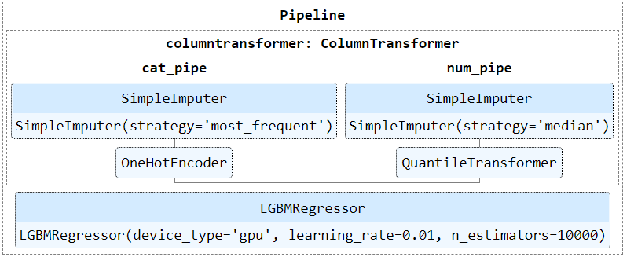
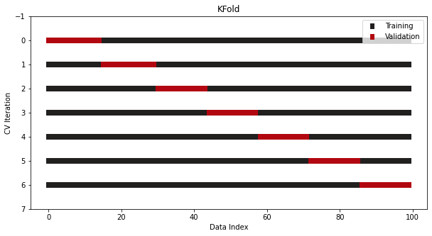
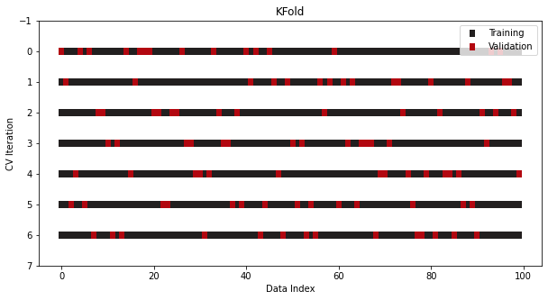
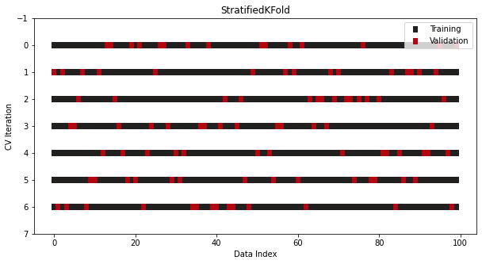
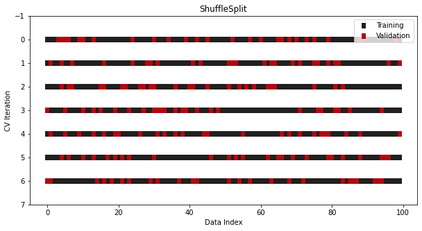
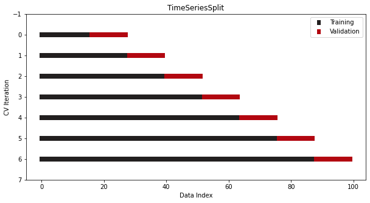

123 Model building, sklearn
TOC
- Misc
- Optimization
- Preprocessing
- Pipelines
- Misc
- Basic Feature Transforming and Model Fitting Pipeline
- Column Transformers
- Function Transformers
- Custom Transformers Classes
- Tuning a Pipeline
- Display Pipelines in Jupyter
- Algorithms
- CV/Splits
Misc
- Extensions
- {{DeepChecks}} - for model diagnostics
- {{feature-engine}} - multiple transformers to engineer and select features to use in machine learning models.
- Preventing data leakage in sklearn
- Use
fit_transformon the train data - this ensures that the transformer learns from the train set only and transforms it simultaneously. Then, call thetransformmethod on the test set to transform it based on the information learned from the training data (i.e mean and variance of the training data).- Prevents data leakage
- Somehow the transform parameters calculated on the training data have to saved, so they can be applied to the production data. This can be done with Pipelines (see Pipelines >> Misc) by serializing the Pipeline objects.
- Use
u_transf = LabelEncoder()
item_transf = LabelEncoder()
# encoding
df['user'] = u_transf.fit_transform(df['user'])
df['item'] = item_transf.fit_transform(df['item'])
# decoding
df['item'] = item_transf.inverse_transform(df['item'])
df['user'] = u_transf.inverse_transform(df['user'])A more robust way is to use sklearn’s Pipelines (see Pipelines below)
Tuning
- Pick a metric for
GridSearchCVandRandomizedSearchCV- Default is accuracy for classification which is rarely okay
- Using metric from sklearn
- Pick a metric for
gs = GridSearchCV(estimator=svm.SVC(),
param_grid={'kernel':('linear', 'rbf'), 'C':[1, 10]},
scoring=‘f1_micro’)List of metrics available
Using a custom metric
from sklearn.metrics import fbeta_score, make_scorer
custom_metric = make_scorer(fbeta_score, beta=2)
gs = GridSearchCV(estimator=svm.SVC(),
param_grid={'kernel':('linear','rbf'), 'C':[1,10]},
scoring=custom_metric)Also see Diagnostics, Classification >> Scores >> Lift Score
Score model
- Also see Pipelines >> Tuning a Pipeline
- Basic
model = RandomForestClassifier(max_depth=2, random_state=0, warm_start=True, n_estimators=1)
model.fit(X_train, y_train)
model.score(X_test, y_test)- Classification
from sklearn.metrics import classification_report
rep = classification_report(y_test, y_pred, output_dict = True)See Diagnostics, Classification >> Multinomial for definitions of multinomial scores
Multiple metrics function
from sklearn.metrics import precision_recall_fscore_support
def score(y_true, y_pred, index):
"""Calculate precision, recall, and f1 score"""
metrics = precision_recall_fscore_support(y_true, y_pred, average='weighted')
performance = {'precision': metrics[0], 'recall': metrics[1], 'f1': metrics[2]}
return pd.DataFrame(performance, index=[index])predict_probaoutputs probabilities for classification models
Optimization
- Misc
- For fast iteration and if you have access to GPUs, it’s better to use {{XGBoost, LightGBM or CatBoost}} since sklearn is only CPU capable.
- Fastest to slowest: CaBoost, LightGBM, XGBoost
- For fast iteration and if you have access to GPUs, it’s better to use {{XGBoost, LightGBM or CatBoost}} since sklearn is only CPU capable.
- {{sklearnex}}
- Intel® Extension for Scikit-learn that dynamically patches scikit-learn estimators to use Intel(R) oneAPI Data Analytics Library as the underlying solver
- Requirements
- The processor must have x86 architecture.
- The processor must support at least one of SSE2, AVX, AVX2, AVX512 instruction sets.
- ARM* architecture is not supported.
- Intel® processors provide better performance than other CPUs.
- Requirements
- Misc
- Docs
- Benchmarks
- Algorithms
- Currently extension does not support multi-output and sparse data for the Random Forest and K-Nearest Neighbors
- Non-interactively
- Intel® Extension for Scikit-learn that dynamically patches scikit-learn estimators to use Intel(R) oneAPI Data Analytics Library as the underlying solver
python -m sklearnex my_application.py- Interactively for all algorithms
from sklearnex import patch_sklearn
patch_sklearn()
# then import sklearn estimators- Interactively for specific algorithms
from sklearnex import patch_sklearn
patch_sklearn([
'RandomForestRegressor,
'SVC',
'DBSCAN'
])- Unpatch
unpatch_sklearn()- Need to reimport estimators after executing
- Speeding up retraining a model (article)
- Potentially useful for slow training models that need to be retrained often.
- Not all models have these methods available
warm_start = Truepermits the use of the existing fitted model attributes to initialize a new model in a subsequent call to fit- Doesn’t learn new parameters so shouldn’t be used to fix concept drift
- i.e. The new data should have the same distribution as the original data which maintains the same relationship with the output variable
- Example
- Doesn’t learn new parameters so shouldn’t be used to fix concept drift
# original fit
model = RandomForestClassifier(max_depth=2, random_state=0, warm_start=True, n_estimators=1)
model.fit(X_train, y_train)
# fit with new data
model.n_estimators+=1
model.fit(X2, y2)- Partial Fit
- Does learn new model parameters
- Example
# original fit
model = SGDClassifier()
model.partial_fit(X_train, y_train, classes=np.unique(y))
# fit with new data
model.partial_fit(X2, y2)Preprocessing
- Misc
- Resources
- SciKit-Learn Transformation Docs
train_test_splitdoesn’t choose random rows to be in each partition by default. For example, a 90-10 split has the first 90% of the rows in Train which leaves the last 10% of the rows to be in Test- “shuffle=True” will randomly shuffle the rows before it partitions which would be equivalent to randomly selecting rows for each partition
- Resources
- Stratified train/test splits
np.random.seed(2019)
# Generate stratified split
X_train, X_test, y_train, y_test = train_test_split(X, y, stratify=y, random.state=42)
# Train set class weights
>>> pd.Series(y_train).value_counts(normalize=True)
1 0.4
0 0.4
2 0.2
dtype: float64
# Test set class weights
>>> pd.Series(y_test).value_counts(normalize=True)
1 0.4
0 0.4
2 0.2Or you can use
StratifiedKFoldwhich stratifies automatically.Stratified Train/Validate/Test splits
X_train, X_, y_train, y_ = train_test_split(
df['token'], tags, train_size=0.7, stratify=tags, random_state=RS
)
X_val, X_test, y_val, y_test = train_test_split(
X_, y_, train_size=0.5, stratify=y_, random_state=RS
)
print(f'train: {len(X_train){style='color: #990000'}[}]{style='color: #990000'} ({len(X_train)/len(df):.0%})\n'
f'val: {len(X_val){style='color: #990000'}[}]{style='color: #990000'} ({len(X_val)/len(df):.0%})\n'
f'test: {len(X_test){style='color: #990000'}[}]{style='color: #990000'} ({len(X_test)/len(df):.0%})')- Check proportions of stratification variable (e.g. “tags”) in splits
split = pd.DataFrame({
'y_train': Counter(', '.join(i for i in row) for row in mlb.inverse_transform(y_train)),
'y_val': Counter(', '.join(i for i in row) for row in mlb.inverse_transform(y_val)),
'y_test': Counter(', '.join(i for i in row) for row in mlb.inverse_transform(y_test))
}).reindex(tag_dis.index)
split = split / split.sum(axis=0)
split.plot(
kind='bar',
figsize=(10,4),
title='Tag Distribution per Split',
ylabel='Proportion of observations'
);- Bin numerics:
KBinsDiscretizer(n_bins=4) - Impute Nulls/Nas
SimpleImputer(Docs)
col_transformer = ColumnTransformer(
# Transformer name, Transformer Object and columns
[("ImputPrice", SimpleImputer(strategy="median"), ["price"])],
# Any other columns are ignored
remainder= SimpleImputer(strategy="constant", fill_value=-1)
)Takes “price” and replaces Nulls with median; all other columns get constant, -1, to replace their Nulls
“most frequent” also available
IterativeImputer(Docs) - Multivariate imputer that estimates values to impute for each feature with missing values from all the others.KNNImputer(Docs) - Multivariate imputer that estimates missing features using nearest samples.Log:
FunctionTransformer(lambda value: np.log1p(value))Standardize
from sklearn.preprocessing import StandardScaler
scaler = StandardScaler()
standardized_data = scaler.fit_transform(df)
standardized_df = pd.DataFrame(standardized_data, columns=df.columns)Check:
standardized_df.apply(["mean", "std"]Scaling
- Min/Max
from sklearn.preprocessing import MinMaxScaler
# Create a scaler object
mm_scaler = MinMaxScaler()
# Transform the feature values
churn[["Customer_Age", "Total_Trans_Amt"]] = mm_scaler.fit_transform(churn[["Customer_Age", "Total_Trans_Amt"]])
# check the feature value range after transformation
churn["Customer_Age"].apply(["min", "max"])- “feature_range=(0,1)” parameter allows you to change the range
- default range for the MinMaxScaler is [0,1]
- Ordinal
encode_cat = ColumnTransformer(
[('cat', OrdinalEncoder(), make_column_selector(dtype_include='category'))],
remainder='passthrough'
)- Categorical DType (like R factor type)
- Assign predefined unordered values so that whenever some value for some column does not exist in the training set, receiving such a value in the test set would not lead to incorrectly assigned labels or any other logical error.
- With multiple categorical columns, it can be difficult to stratify them in the training/test splits
- Must know all possible categories for each categorical variable
- Assign predefined unordered values so that whenever some value for some column does not exist in the training set, receiving such a value in the test set would not lead to incorrectly assigned labels or any other logical error.
import pandas as pd
from pandas import CategoricalDtype
def transform_data(df: pd.DataFrame, target: pd.Series, frac: float = 0.07,
random_state: int = 42) -> pd.DataFrame:
"Transform non-numeric columns into categorical type and clean data."
categories_map = {
'gender': {1: 'male', 2: 'female'},
'education': {1: 'graduate', 2: 'university', 3: 'high_school',
4: 'others', 5: 'others', 6: 'others', 0: 'others'},
'marital_status': {1: 'married', 2: 'single', 3: 'others', 0: 'others'}
}
for col_id, col_map in categories_map.items():
df[col_id] = df[col_id].map(col_map).astype(
CategoricalDtype(categories=list(set(col_map.values())))
)- One-hot encoding
- ** Don’t use pandas
get_dummiesbecause it doesn’t handle categories that aren’t in your test/production set **- Wonder if get_dummies creates 1 less dummy than the number of categories like it should
- Basic
- ** Don’t use pandas
# Create a one-hot encoder
onehot = OneHotEncoder()
# Create an encoded feature
encoded_features = onehot.fit_transform(churn[["Marital_Status"]]).toarray()
# Create DataFrame with the encoded features
encoded_df = pd.DataFrame(encoded_features, columns=onehot.categories_)- Pipeline
from sklearn.preprocessing import OneHotEncoder
# one hot encode categorical features
ohe = OneHotEncoder(handle_unknown='ignore')
from sklearn.pipeline import Pipeline
# store one hot encoder in a pipeline
categorical_processing = Pipeline(steps=[('ohe', ohe)])
from sklearn.compose import ColumnTransformer
# create the ColumnTransormer object
preprocessing = ColumnTransformer(transformers=[('categorical', categorical_processing, ['gender', 'job'])],
remainder='passthrough')- Class Imbalance
- SMOTE with {{imblearn}}
from sklearn.datasets import make_classification
from imblearn.over_sampling import SMOTE
X_train, y_train = make_classification(n_samples=500, n_features=5, n_informative=3)
X_res, y_res = SMOTE().fit_resample(X_train, y_train)Pipelines
- Misc
- Helps by creating more maintainable and clearly written code. Reduces mistakes by transforming train/test sets automatically.
- Pipeline objects are estimators and can be serialized and saved like any other estimator
import joblib
#saving the pipeline into a binary file
joblib.dump(pipe, 'wine_pipeline.bin')
#loading the saved pipeline from a binary file
pipe = joblib.load('wine_pipeline.bin')- Basic Feature Transforming and Model Fitting Pipeline
- format: Pipeline(steps = [(‘<step1_name>’, function), (‘<step2_name>’, function)])
- Example
np.random.seed(2019)
X_train, X_test, y_train, y_test = train_test_split(X, y, test_size=0.25, random_state=42)
#creating the pipeline with its different steps
#fitting the pipeline with data
#making predictions
pipe = Pipeline([
('feature_selection', VarianceThreshold(threshold=0.1)),
('scaler', StandardScaler()),
('model', KNeighborsClassifier())
])
pipe.fit(X_train, y_train)
predictions = pipe.predict(X_test)
#checking the accuracy
accuracy_score(y_test, predictions) #sklearn function; multi-class: accuracy, binary: jaccard index (similarity)Pipelinetransforms according to the sequence of the steps inserted into the list of tuplesColumn Transformers
- Example: transform by column type
#creating pipeline for numerical features
numerical_pipe = Pipeline([
('imputer', SimpleImputer(missing_values=np.nan, strategy='mean')),
('scaler', StandardScaler())
])
#creating pipeline for categorical features
categorical_pipe = Pipeline([
('imputer', SimpleImputer(missing_values=np.nan, strategy='most_frequent')),
('one_hot', OneHotEncoder(handle_unknown='ignore'))
])
preprocessor = ColumnTransformer([
('numerical', numerical_pipe, make_column_selector(dtype_include=['int', 'float'])),
('categorical', categorical_pipe, make_column_selector(dtype_include=['object', 'category'])),
])
pipe = Pipeline([
('column_transformer', preprocessor),
('model', KNeighborsClassifier())
])
pipe.fit(X_train, y_train)
predictions = pipe.predict(X_test)ColumnTransformertakes list of tuples: name, transformer, columns- n_jobs, verbose args also available
- remainder=“passthrough” says all other columns not listed are ignored (might be a default)
- Can also provide a transformer object
- methods: fit_transform, get_feature_names_out, get_params, etc
make_column_selectorallows your to select the type of column to apply the transformer (docs)Example: Apply sequence of transformations to a column
col_transformer = ColumnTransformer(
[
(
"PriceTransformerPipeline",
# Pipeline -> multiple transformation steps
Pipeline([
("MeanImputer" , SimpleImputer(strategy="median")),
("LogTransformation", FunctionTransformer(lambda value: np.log1p(value)) ),
("StdScaler", StandardScaler() ),
]),
["price"]
),
],
remainder=SimpleImputer(strategy="constant", fill_value=-1)
)For the “price” columns, it replaces Nulls with median, then log transforms, then standardizes. All other columns get their Nulls replaces with -1.
Function Transformers
- Misc
- If using a method in the sklearn.preprocessing module, then able to use fit, transform, and fit_transform methods (I think)
- Data must be the first argument of the function
- inverse_func argument for
FunctionTransformerallows you to include a back-transform function
- Steps
- Create function that transforms data
- Create
FunctionTransformerobject using function as the argument - Add function-tranformer to the pipeline by including it as an argument to
make_pipeline
- Example: Make numerics 32-bit instead 64-bit to save memory
- Misc
from sklearn.pipeline import make_pipeline
from sklearn.preprocessing import FunctionTransformer
def reduce_memory(X: pd.DataFrame, y=None):
"""Simple function to reduce memory usage by casting numeric columns to float32."""
num_cols = X.select_dtypes(incluce=np.number).columns
for col in num_cols:
X[col] = X.astype("float32")
return X, y
ReduceMemoryTransformer = FunctionTransformer(func = reduce_memory)
# Plug into a pipeline
>>> make_pipeline(SimpleImputer(), ReduceMemoryTransformer)Data goes through the SimpleImputer first then the ReduceMemoryTransformer
Custom Transformers Classes
- Misc
- For more complex transforming tasks
- Steps
- Create a class that inherits from
BaseEstimatorandTransformerMixinclasses ofsklearn.base- Inheriting from these classes allows Sklearn pipelines to recognize our classes as custom estimators and automatically adds
fit_transformto your class
- Inheriting from these classes allows Sklearn pipelines to recognize our classes as custom estimators and automatically adds
- Add transforming methods to Class
- Create a class that inherits from
- Class Skeleton
- Misc
class CustomTransformer(BaseEstimator, TransformerMixin):
def __init__(self):
pass
def fit(self):
pass
def transform(self):
pass
def inverse_transform(self):
pass- Example: Log transforming outcome variable
from sklearn.base import BaseEstimator, TransformerMixin
from sklearn.preprocessing import PowerTransformer
class CustomLogTransformer(BaseEstimator, TransformerMixin):
def __init__(self):
self._estimator = PowerTransformer() # init a transformer
def fit(self, X, y=None):
X_copy = np.copy(X) + 1 # add one in case of zeroes
self._estimator.fit(X_copy)
return self
def transform(self, X):
X_copy = np.copy(X) + 1
return self._estimator.transform(X_copy) # perform scaling
def inverse_transform(self, X):
X_reversed = self._estimator.inverse_transform(np.copy(X))
return X_reversed - 1 # return subtracting 1 after inverse transform
reg_lgbm = lgbm.LGBMRegressor()
final_estimator = TransformedTargetRegressor(
regressor=reg_lgbm, transformer=CustomLogTransformer()
)
final_estimator.fit(X_train, y_train)- fit returns the tranformer itself since it returns self
- Estimates the optimal parameter lambda for each feature
- transform returns transformed features
- Applies the power transform to each feature using the estimated lambdas in fit
- fit_transform does both at once
custom_log.fit(tps_df)
transformed_tps = custom_log.transform(tps_df)
# or
transformed_tps = custom_log.fit_transform(tps_df)- inverse_transform returns the back-transformed features
TransformedTargetRegressortransforms the targets y before fitting a regression model. The predictions are mapped back to the original space via an inverse transform. It takes as an argument the regressor that will be used for prediction, and the transformer that will be applied to the target variable- The regressor parameter accepts both regressors or pipelines that end with regressors
- If the transformer is a function, like np.log, you can pass it to func argument
- Example: Dummy transformer +
FeatureUnion(article)
class DummyTransformer(BaseEstimator, TransformerMixin):
"""
Dummy class that allows us to modify only the methods that interest us,
avoiding redudancy.
"""
def __init__(self):
return None
def fit(self, X=None, y=None):
return self
def transform(self, X=None):
return selfThis classes (below) that inherit this class with get these methods along with fit_transform
Transformer classes
class Preprocessor(DummyTransformer):
"""
Class used to preprocess text
"""
def __init__(self, remove_stopwords: bool):
self.remove_stopwords = remove_stopwords
return None
def transform(self, X=None):
preprocessed = X.apply(lambda x: preprocess_text(x, self.remove_stopwords)).values
return preprocessed
class SentimentAnalysis(DummyTransformer):
"""
Class used to generate sentiment
"""
def transform(self, X=None):
sentiment = X.apply(lambda x: get_sentiment(x)).values
return sentiment.reshape(-1, 1) # <-- note the reshape to transforEach class inherits the dummy transformer and its methods
preprocess_text and get_sentiment are user functions that are defined earlier in the article
Create pipeline
vectorization_pipeline = Pipeline(steps=[
('preprocess', Preprocessor(remove_stopwords=True)), # the first step is to preprocess the text
('tfidf_vectorization', TfidfVectorizer()), # the second step applies vectorization on the preprocessed text
('arr', FromSparseToArray()), # the third step converts a sparse matrix into a numpy array in order to show it in a dataframe
])TfidVectorizer and FromSparseArray are other classes in the article that I didn’t include in the Transformer classes chunk to save space
Combine transformed features
# vectorization_pipeline is a pipeline within a pipeline
features = [
('vectorization', vectorization_pipeline),
('sentiment', SentimentAnalysis()),
('n_chars', NChars()),
('n_sentences', NSententences())
]
combined = FeatureUnion(features) # this is where we merge the features together
# Get col names: subsets the second step of the second object in the vectorization_pipeline to retrieve
# the terms generated by the tf-idf then adds the other three column names to it
cols = vectorization_pipeline.steps[1][1].get_feature_names() + ["sentiment", "n_chars", "n_sentences"]
features_df = pd.DataFrame(combined.transform(df['corpus']), columns=cols)Pipelines are combined with FeatureUnion, features are transformed, and coerced into a pandas df which can be used to train a model
NChars and NSentences are other classes in the article that I didn’t include in the Transformer classes chunk to save space
Tuning a Pipeline
- Example
parameters = {
'column_transformer__numerical__imputer__strategy': ['mean', 'median'],
'column_transformer__numerical__scaler': [StandardScaler(), MinMaxScaler()],
'model__n_neighbors': [3, 6, 10, 15],
'model__weights': ['uniform', 'distance'],
'model__leaf_size': [30, 40]
}
#defining a scorer and a GridSearchCV instance
my_scorer = make_scorer(accuracy_score, greater_is_better=True)
search = GridSearchCV(pipe, parameters, cv=3, scoring=my_scorer, n_jobs=-1, verbose=1)
#search for the best hyperparameter combination within our defined hyperparameter space
search.fit(X_train, y_train)
#changing pipeline parameters to gridsearch results
pipe.set_params(**search.best_params_)
#making predictions
predictions = pipe.predict(X_test)
#checking accuracy
accuracy_score(y_test, predictions)- See Column Transformer section example for details on this pipeline
- Note the double underscore used in the keys of the parameter dict
- Double underscores separate names of steps inside a nested pipeline with last name being the argument of the transformer function being tuned
- Example: ‘column_transformer__numerical__imputer__strategy’
- column_transformer (pipeline step name) >> numerical (pipeline step name) >> imputer (pipeline step name) >> strategy (arg of
SimpleImputerfunction)
- column_transformer (pipeline step name) >> numerical (pipeline step name) >> imputer (pipeline step name) >> strategy (arg of
- View tuning results
best_params = search.best_params_
print(best_params)
# Stores the optimum model in best_pipe
best_pipe = search.best_estimator_
print(best_pipe)
result_df = DataFrame.from_dict(search.cv_results_, orient='columns')
print(result_df.columns)- Display Pipelines in Jupyter
from sklearn import set_config
set_config(display="diagram")
giant_pipelineAlgorithms
- Misc
- Histogram-based Gradient Boosting Regression Tree
- Histogram-based models are more efficient since they bin the continuous features
- Inspired by LightGBM. Much faster than GradientBoostingRegressor for big datasets (n_samples >= 10 000).
sklearn.ensemble.HistGradientBoostingRegressorStochastic Gradient Descent (SGD)
- algorithm
- Not a class of models, just merely an optimization technique
SGDClassifier(loss='log')results in logistic regression, i.e. a model equivalent to LogisticRegression which is fitted via SGD instead of being fitted by one of the other solvers in LogisticRegression.SGDRegressor(loss='squared_error', penalty='l2')and Ridge solve the same optimization problem, via different means.
- Penalyzed regression hyperparameters are labelled different than in R
- lambda (R) is alpha (py)
- alpha (R) is 1 - L1_ratio (py)
- Can be successfully applied to large-scale and sparse machine learning problems often encountered in text classification and natural language processing Advantages:
- Efficiency.
- Ease of implementation (lots of opportunities for code tuning). Disadvantages:
- SGD requires a number of hyperparameters such as the regularization parameter and the number of iterations.
- SGD is sensitive to feature scaling.
- Processing
- Make sure you permute (shuffle) your training data before fitting the model or use shuffle=True to shuffle after each iteration (used by default).
- Features should be standardized using e.g. make_pipeline(StandardScaler(), SGDClassifier())
BisectingKMeans
- centroid is picked progressively (instead of simultaneously) based on the previous cluster. We would split the cluster each time until the number of K is achieved
- Advantages
- It would be more efficient with a large number of clusters
- Cheaper computational costs
- It does not produce empty clusters
- The clustering result was well ordered and would create a visible hierarchy.
XGBoost with GPU
gbm = xgb.XGBClassifier(
n_estimators=100000,
max_depth=6,
objective="binary:logistic",
learning_rate=.1,
subsample=1,
scale_pos_weight=99,
min_child_weight=1,
colsample_bytree=1,
tree_method='gpu_hist',
use_label_encoder=False
)
eval_set=[(X_train,y_train),(X_val,y_val)]
fit_model = gbm.fit(
X_train, y_train,
eval_set=eval_set,
eval_metric='auc',
early_stopping_rounds=20,
verbose=True
)tree_method='gpu_hist'specifies the use of GPU- Plot importance
fig,ax2 = plt.subplots(figsize=(8,11))
xgb.plot_importance(gbm, importance_type='gain', ax=ax2)- GBM with Quantile Loss (PIs)
gbm_lower = GradientBoostingRegressor(
loss="quantile", alpha = alpha/2, random_state=0
)
gbm_upper = GradientBoostingRegressor(
loss="quantile", alpha = 1-alpha/2, random_state=0
)
gbm_lower.fit(X_train, y_train)
gbm_upper.fit(X_train, y_train)
test['gbm_lower'] = gbm_lower.predict(X_test)
test['gbm_upper'] = gbm_upper.predict(X_test)CV/Splits
- K-Fold
from sklearn.model_selection import KFold
cv = KFold(n_splits=7, shuffle=True)Shuffling: minimizes the risk of overfitting by breaking the original order of the samples
StratifiedKFold
from sklearn.model_selection import StratifiedKFold
cv = StratifiedKFold(n_splits=7, shuffle=True, random_state=1121218)- For classification, class ratios are held to the same ratios in both the training and test sets.
- class ratios are preserved across all folds and iterations.
- LeavePOut:
from sklearn.model_selection import LeaveOneOut, LeavePOut- Data is so limited that you have to perform a CV where you set aside only a few rows of data in each iteration
LeaveOneOutis P = 1 forLeavePOut
- ShuffleSplit, StratifiedShuffleSplit
from sklearn.model_selection import ShuffleSplit, StratifiedShuffleSplit
cv = ShuffleSplit(n_splits=7, train_size=0.75, test_size=0.25)
cv = StratifiedShuffleSplit(n_splits=7, test_size=0.5)Not a CV, just repeats the train/test split process multiple times
Using different random seeds should resemble a robust CV process if done for enough iterations
TimeSeriesSplit
from sklearn.model_selection import TimeSeriesSplit
cv = TimeSeriesSplit(n_splits=7)With time series data, the ordering of samples matters.
Group Data
- Data is not iid (e.g. multi-level data)
- Options
- Works just like the non-group methods but with a group arg for the grouping variable